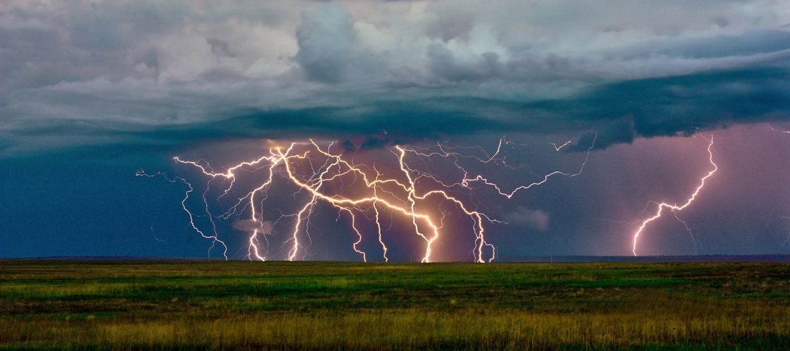

10 Facts about lightning you may not know
1) Lightning is a giant discharge of electricity. In a cloud, water and ice move around, separating the charges. Once a significant amout of charge has build up, it will want to discharge to return to equilibrium and it does so, by producing a large spark that we know as lightning.
2) Approximately 300,000 lightning strikes hit the ground in Britain each year with 30 percent of reported lightning strikes causing severe damage. Each year 30 to 60 people are recorded as being struck by lightning, 3 of whom, on average, die (14 in 1984 compared to 2 in 2005). In the USA around a 100 residents are killed by lightning every year.

3) If you can hear thunder, you are within 16 km (10 mile) radius of a storm-and can be struck by lightning.
4) A majority of lightning occurs in the storm cloud itself and only 10 to 20 percent of all lightning reaches the ground.
5) The air around a lightning strike is typically superheated to about 20,000 degrees Celsius or over 3 times hotter than the surface of the sun (estimated at 5,500 C). The air temperature can range from 8,000 to 30,000 degrees Celsius.
6) People on or in or near water are among those most at risk during thunderstorms. Swimming is particularly dangerous, as not only do swimmers protrude from the water, presenting a potential channel for electrical discharge, but also because water is a good conductor of electricity.
7) Lightning can—and often does—strike in the same place twice. Tall buildings and monuments are frequently hit by lightning.
8) A majority of lightning occurs in the storm cloud itself and only 10 to 20 percent of all lightning reaches the ground.
9) Victims of lightning do not retain the charge and are not "electrified". It is safe to help them especially as most people does survive being struck by lightning.
10) Positive lightning from the top of storm clouds is normally over 6 times stronger than negative lightning due to the longer distances it typically has overcome. Sometimes referred to as “bolts from the blue” they can occur when there is very little cloud activity compared to the thunderstorms associated with negative lightning. The unexpectedness and the greater strength make positive lightning the most dangerous type of lightning. Positive lightning makes up less than 5% of all lightning strikes.